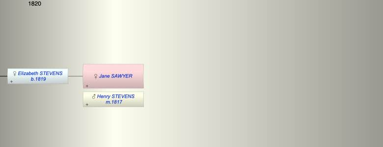

| [Index] |
| Jane SAWYER |
|  |
| m. 14 Oct 1817 Henry STEVENS at Hawkchurch |
| Near Relatives of Jane SAWYER | ||||||
| Relationship | Person | Born | Birth Place | Died | Death Place | Age |
| Self | Jane SAWYER | |||||
| Husband | Henry STEVENS | |||||
| Daughter | Elizabeth STEVENS | 1819 | Chardstock | |||
| Son in Law | Charles BREWER | 18 Mar 1813 | Exminster | 1894 | 81 | |
| Granddaughter | Ruth BREWER | 10 Dec 1849 | Starcross | 31 Mar 1921 | Newton Abbott | 71 |
| Events in Jane SAWYER's life | |||||
| Date | Age | Event | Place | Notes | Src |
| 14 Oct 1817 | Married Henry STEVENS | Hawkchurch | Note 1 | ||
| 1819 | Birth of daughter Elizabeth STEVENS | Chardstock | Note 2 | ||
| Note 1: by banns on 14 Oct 1817 at Hawkchurch - Henry Stevens of Chardstock and Jane Sawyer otp ex FMP PR. |
| Note 2: ex 1841 census daughter of Henry (labourer) and Jane at Chardstock on 20 Aug 1819 |
| Created on a Mac™ using iFamily for Mac™ on 15 Sep 2023 |